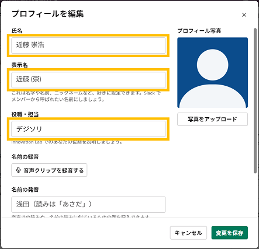

概要
まずはプロフィールの設定をお願いします。
これがInnovation Labワークスペースでの唯一の必須設定としています。
その他の設定は任意です。
見映えの変更を少し紹介しておきます。
プロフィール設定 (■)
-
プロフィール編集の開き方

-
プロフィールの編集内容
氏名と表示名を変更し、役職・担当欄には所属部署を入れましょう。対面の少ないラボ活動で、会話はしたけどSlackで見つけられない...というのを減らしたいのが目的となっています。
-
氏名
- 実名 でお願いします。
- 最初はSlackアカウント作成時に入力した氏名か、メールアドレスのローカルパート(@の左側)となっています。
- 実名 でお願いします。
-
表示名
- 何でもOKです。
- 入力内容は、投稿者やメンション先、ユーザーリスト上の表示に使用されます。
- 空欄のままの場合は氏名が使われます。
- 何でもOKです。
-
役職・担当
- 所属部署を記載してください。略称で十分です。

-
-
プロフィール写真
好きな画像でのアピールをお願いします。
未設定のデフォルトばかりだと、絵面が盛り上がらないのです。ペット、インテリア小物、釣果、お子さん、アニメなんでもどうぞ。
公序良俗だけは遵守願います(__)
↑デフォルトばかりで絵面に盛り上がりが欠けている様
環境設定
その他の設定は 任意 です。
プロフィールの近くから環境設定画面を開くことができます。

↑環境設定リンク
通知の頻度や時間帯、メッセージの表示形式、キーバインドなどをカスタマイズ可能となっています。
Slackの公式ヘルプ: プロフィールと環境設定 が充実していますので、一通り目を通しておくと良いかもしれません。